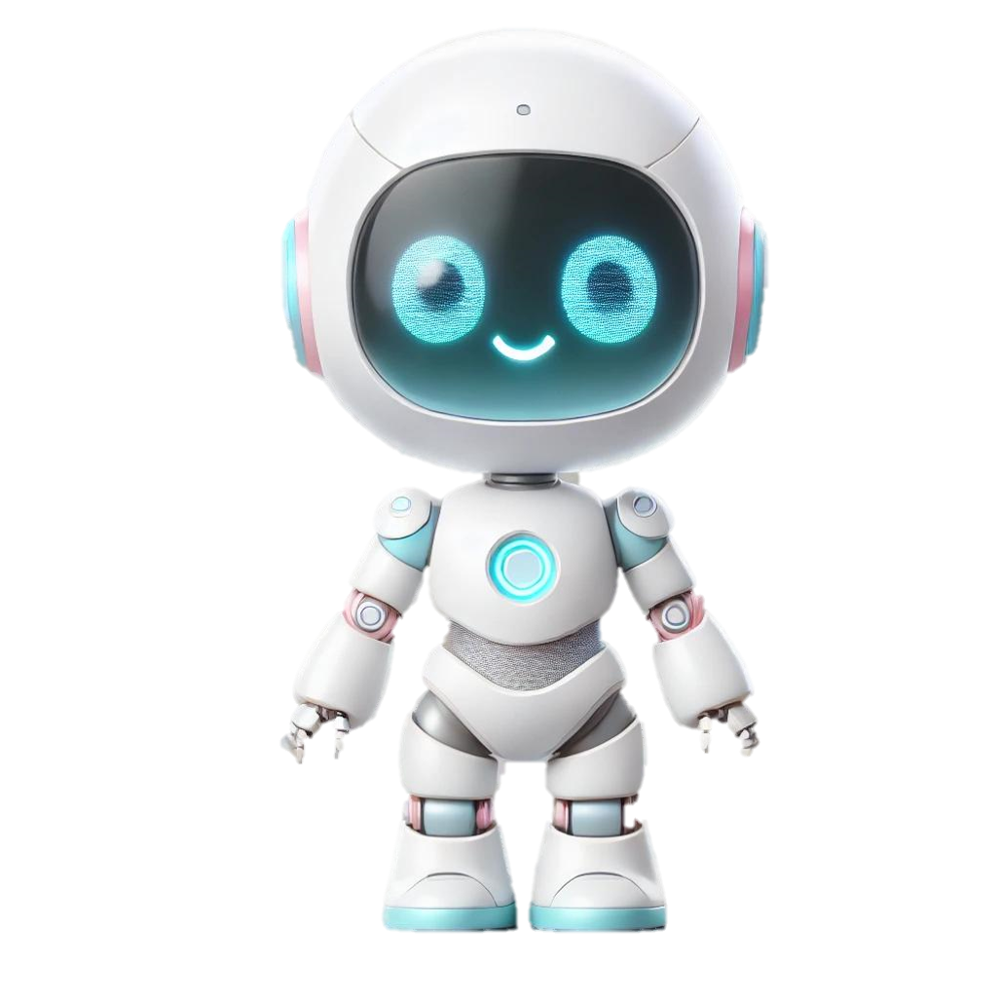

傳統語音摘要模式
人工聽音檔→打成書面文字→畫重點→手動摘要
費時、費力、工作效率不佳
AI 語音摘要助理
選擇音檔 / Youtube 連結→一鍵生成摘要報告
省時、省力、提升工作效率


適用情境

已有會議/訪談的音檔
需要轉換成文字檔
需要轉換成文字檔
有大量音檔資料
想快速知道重點摘要
想快速知道重點摘要

在Youtube上
找到喜歡的影片
想將音檔轉譯成文字
找到喜歡的影片
想將音檔轉譯成文字
想將Youtube上
大量的學習音檔
生成摘要方便閱讀
大量的學習音檔
生成摘要方便閱讀
關於我們的產品
我們的語音摘要生成工具利用先進的 AI 人工智慧技術，為您提供精確、高效的語音轉譯與自動摘要生成服務。無論您是需要會議紀錄、訪談整理，或是音訊內容文字化，我們的系統都能快速完成。
- 省時：不必再人工聽音檔打字
- 省力：一鍵生成語音內容摘要
- 省心：轉譯正確率高達 93.35% 能安心閱讀摘要內容
 →
→
| 音檔名稱 | 長照訪談個案_CMS 6 | 長照訪談個案_CMS 5 | 長照訪談_現場照護人員 | 長照訪談_現場照護人員 | 長照訪談_現場文書人員 |
|---|---|---|---|---|---|
| 音檔時長 | 00:02:35 | 00:03:16 | 00:03:55 | 00:03:15 | 00:03:18 |
| 文本字數 | 740 | 964 | 998 | 924 | 1000 |
| 語音辨識模型 | Whisper（base） | ||||
| 生成摘要模型 | ANTHROPIC_LLM_MODEL | ||||
| 轉譯結果正確率 | 92.94% | 89.31% | 91.30 % | 97.62% | 95.58% |
| 轉譯日期時間 | 2024/09/25 10:29:16 | 2024/09/25 10:35:07 | 2024/09/12 11:41:40 | 2024/09/12 16:14:08 | 2024/09/12 16:30:04 |
產品服務
將您原本需要耗費數小時至數天的工作內容，現在只要一鍵就搞定！
音檔輕鬆轉換文本內容
透過最新 AI 語音轉譯技術，將音檔轉換成精確的文字內容。
文本內容抓取重點摘要
透過 AI 提取文本重點技術來摘要大量內容，節省閱讀時間。
本地音檔方便快速上傳
支援使用者本地設備音檔上傳，操作簡單方便。
Youtube連結生成摘要
支援使用者貼上 Youtube 連結快速生成摘要內容，功能強大。
立即使用
快速語音摘要生成工具
別再為了瑣碎的事務而費時，將您的煩惱交給我們！
您將能快速得到語音摘要成果，點擊右方按鈕，立即體驗語音摘要生成工具吧！
畫面示意
產品服務包括本地端音檔及 Youtube 連結選擇語音摘要